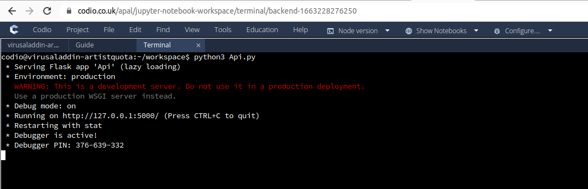

Q1. Run the API.py code. Take a screenshot of the terminal output. What command did you use to run the code?
The command used was
$ python3 Api.pyQ2. Run the following command at the terminal prompt: w3m http://127.0.0.1:5000/user/Ann.
What happens when this command is run, and why?
When the command is run, following output is stored in the file saved as “Ann”
{
"name": "Ann",
"age": 32,
"occupation": "Doctor"
}This happens because as the URL is passed, the get call is made and the get method is invoked. This get method searches for the user named as “Ann” and gives back the result.
Q3. Run the following command at the terminal prompt: w3m http://127.0.0.1:5000/user/Adam. What happens when this command is run, and why?
When the command is run, following output is stored in the file saved as “Adam”
User not found"
This happens because as the URL is passed, the get call is made and the get method is invoked. This get method searches for the user named as “Adam” and when it is not found, it returns the error message with HTTP code 404.
Q4. What capability is achieved by the flask library?
The flask library “Flask Restful” is able to make use of the best of Object Oriented design and calling APIs. In absence of this library, each method is invoked as a separate method with api.route given. In this case, each of HTTP methods: get, put, post and delete are converted into Python methods.